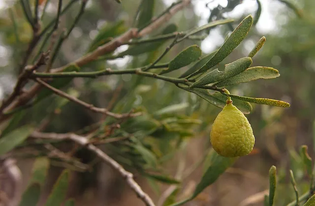

Drinks · Popular in Arid centre
Desert lime cordial
Desert lime cordial is made with wild desert lime, a favourite in Arid centre.

How do you make desert lime cordial?
Whole desert limes cooked into a tangy cordial.
Wild ingredients
- Desert lime (Citrus glauca): in season November to January
Watch the recipe

Video: QE FoodStores on YouTube